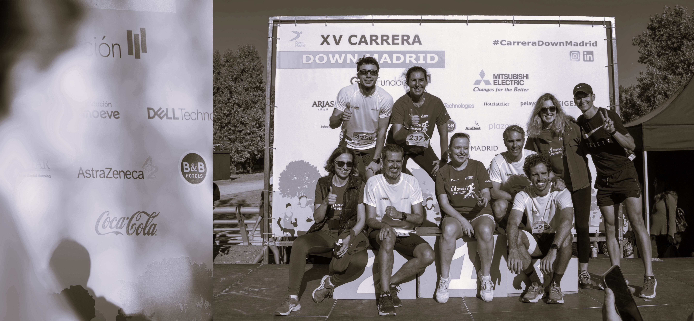
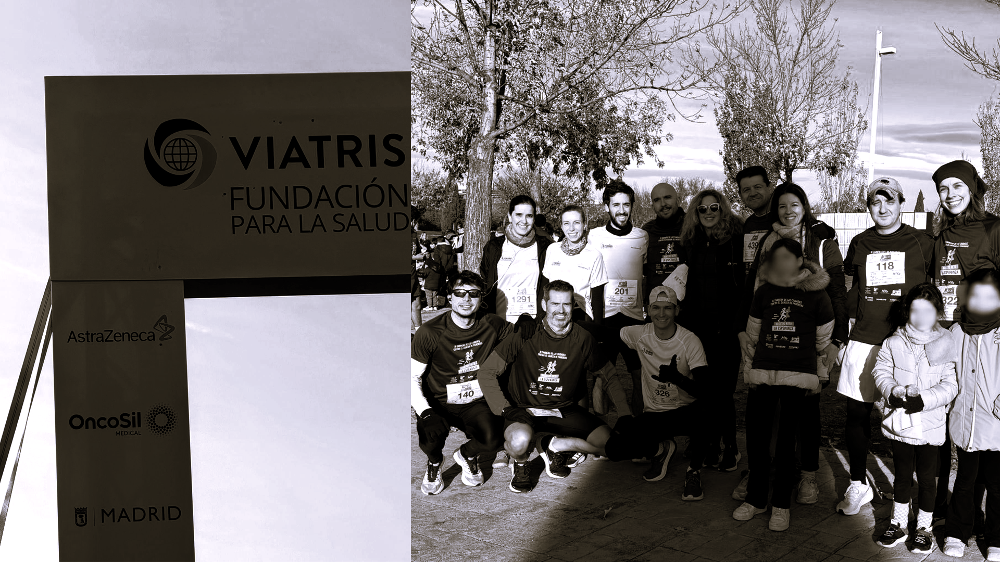
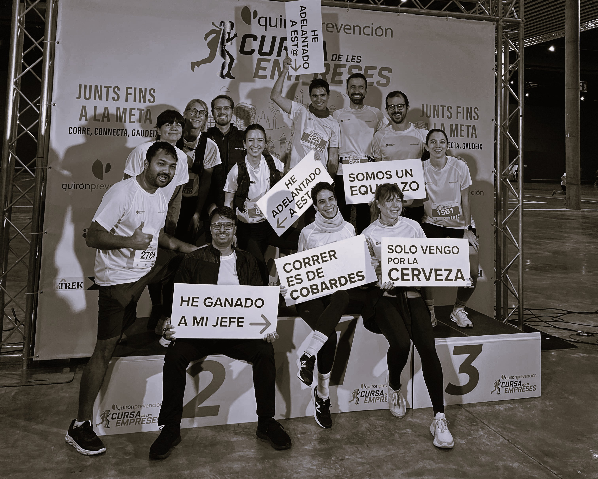
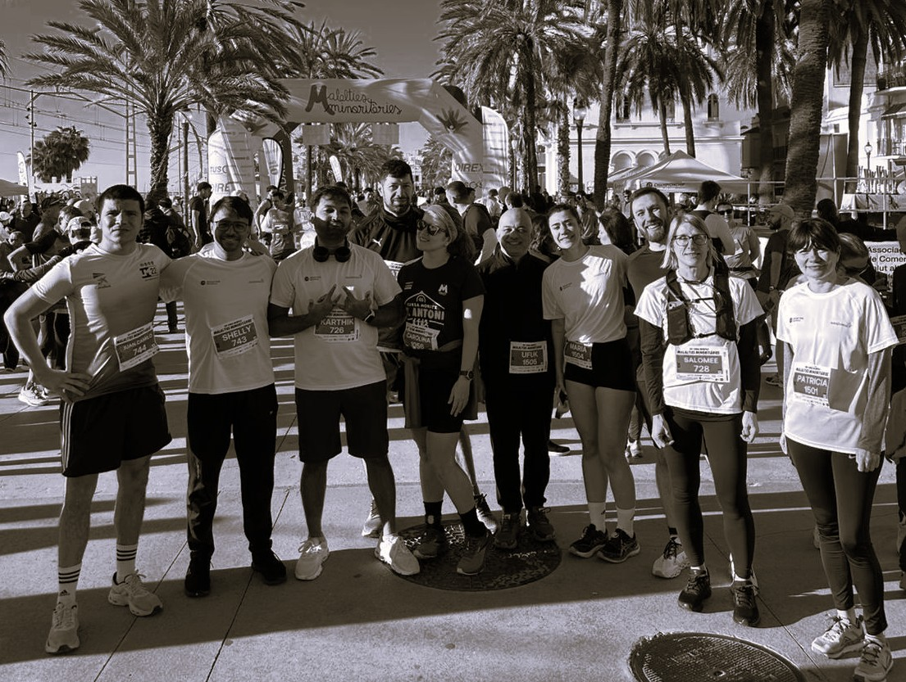
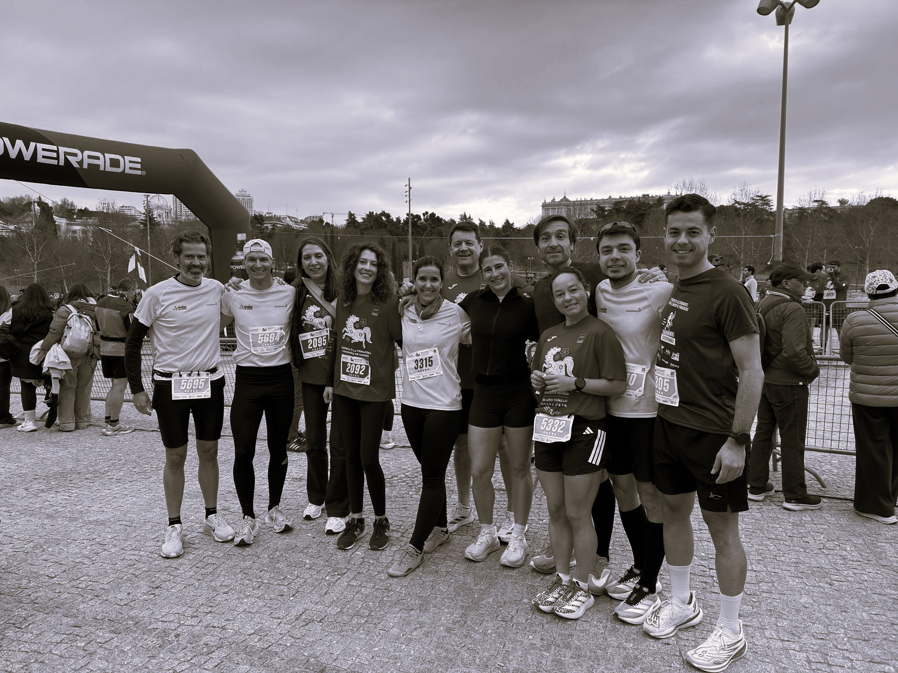
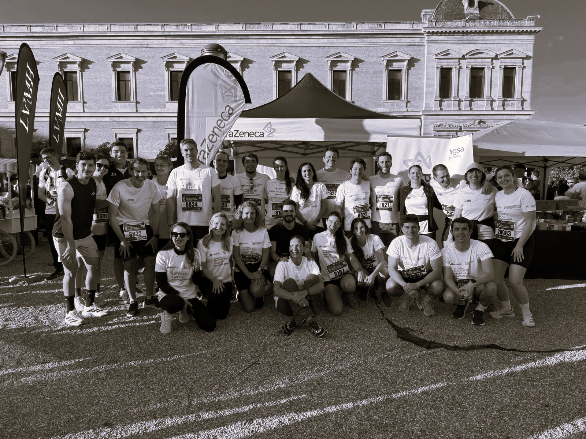

EVENTOS BY AURA

Carrera Down Madrid 2025
El pasado 5 de octubre, participamos junto a AstraZeneca España en la XV Carrera Down Madrid, un evento que reunió a miles de personas bajo el lema “15 años sumando inclusión”.
Durante la jornada, nuestros entrenadores acompañaron a los empleados y familiares de AstraZeneca en las diferentes pruebas, promoviendo un ambiente de energía, motivación y trabajo en equipo.
Fue una oportunidad para demostrar que el deporte es una herramienta de conexión, inclusión y bienestar compartido, valores que tanto en Aura como en AstraZeneca consideramos esenciales.
La Carrera Down Madrid es una cita solidaria que apoya a personas con discapacidad intelectual, fomentando su participación activa en la sociedad a través del deporte.
Este año, más de 3.400 corredores se sumaron al reto, entre ellos colaboradores de 37 empresas, instituciones y fundaciones comprometidas con la causa.
En By Aura nos sentimos orgullosos de haber estado presentes, acompañando a un equipo tan comprometido como el de AstraZeneca, y de haber aportado nuestro granito de arena para que cada paso de esta carrera se sintiera como una celebración de la inclusión, la salud y la comunidad.
Seguiremos apoyando iniciativas que impulsen el movimiento, la diversidad y el bienestar colectivo. Porque correr juntos siempre nos lleva más lejos.¡No te lo pierdas!

Carrera Contra el Cáncer de Páncreas 2025
El pasado 23 de noviembre, participamos junto a AstraZeneca España en la Carrera Contra el Cáncer de Páncreas 2025, un evento solidario que combina la promoción de la actividad física con el apoyo a la investigación de una enfermedad que afecta a miles de personas cada año.
Como parte del equipo técnico de By Aura, tuvimos la oportunidad de acompañar a los participantes durante toda la jornada, contribuyendo al desarrollo de un entorno saludable, motivador y comprometido.
La sesión comenzó con un calentamiento guiado, enfocado en preparar al cuerpo y prevenir lesiones, seguido de una breve introducción a la técnica de carrera para mejorar la eficiencia y la confianza de los corredores. Durante la prueba, nuestros entrenadores ofrecieron acompañamiento y apoyo continuo, fomentando el trabajo en equipo y la superación personal.
Al finalizar la carrera, compartimos un espacio de recuperación y reflexión, celebrando los logros individuales y colectivos, y destacando la importancia de la salud, la prevención y la solidaridad en el ámbito laboral.
En By Aura creemos firmemente en el papel del deporte como herramienta de conexión y bienestar. Por ello, continuaremos apoyando iniciativas que promuevan la salud, la cohesión y el compromiso social dentro de las organizaciones.

Carrera de las Empresas 2025
Hoy hemos vivido una jornada realmente especial participando en la Carrera de las Empresas en Madrid y Barcelona junto a AstraZeneca, un evento que ha reunido a 40 corredores en total en torno al deporte, la salud y el trabajo en equipo.
Desde By Aura, nos hemos encargado de toda la organización y logística del evento, asegurándonos de que cada detalle estuviera perfectamente coordinado para que los participantes pudieran disfrutar al máximo de la experiencia.
Durante las semanas previas, hemos estado trabajando en cada detalle: desde la búsqueda del local, hasta la preparación de un desayuno nutritivo para los empleados, así como la planificación integral del día del evento para que todo saliera a la perfección.
El día de la carrera, nuestros entrenadores lideraron un calentamiento dinámico y motivador, preparando a los corredores para el desafío que tenían por delante. A lo largo del recorrido, brindamos apoyo y acompañamiento constante, fomentando un ambiente de camaradería y superación personal.
El ambiente durante la carrera fue extraordinario, cargado de energía, motivación y compañerismo. Este tipo de iniciativas son fundamentales no solo para fomentar la actividad física, sino también para reforzar los vínculos entre los empleados y promover una cultura corporativa más saludable y cohesionada.
Al finalizar la prueba, compartimos un momento distendido durante el desayuno, donde no faltaron las risas y la sensación de haber vivido una experiencia conjunta muy positiva.
Eventos como este contribuyen de manera directa a crear un entorno laboral más dinámico, saludable y comprometido, alineado con los valores de bienestar y equipo que impulsamos.

Cursa Benéfica de Enfermedades Minoritarias 2026
El pasado fin de semana vivimos una jornada que resume perfectamente lo que significa By Aura: deporte, comunidad y propósito.
Participamos junto a AstraZeneca en la Cursa Benéfica de Enfermedades Minoritarias de Barcelona, un evento que reúne a corredores, empresas y familias con un mismo objetivo: dar visibilidad y apoyo a las personas que conviven con enfermedades poco frecuentes.
Más que kilómetros.
No fue solo una carrera. Fue una oportunidad para:
- Impulsar el deporte como herramienta de impacto social.
- Fortalecer la cultura de equipo.
- Apoyar una causa que necesita voz y recursos.
- Demostrar que la actividad física puede ir de la mano del compromiso.
Desde el calentamiento hasta el último metro, el ambiente fue de energía compartida. Personas de todas las edades, ritmos y niveles unidas por algo más grande que el cronómetro.
Deporte + Empresa + Propósito
Para nosotros, colaborar con AstraZeneca en este tipo de iniciativas refuerza algo en lo que creemos profundamente: las empresas pueden y deben formar parte activa de la transformación social a través del bienestar.
El deporte no solo mejora la salud física. Construye resiliencia, cohesión y valores.
Lo que nos llevamos.
- Sonrisas en la línea de meta.
- Esfuerzo compartido.
- Conciencia sobre la realidad de las enfermedades minoritarias.
- Y la certeza de que seguiremos estando presentes donde el deporte tenga impacto real.
Gracias a todos los que corristeis, apoyasteis y formasteis parte de este día.
Seguimos.
Be Your Aura.

Carrera de la Primavera 2026
La primavera en Madrid no empieza oficialmente con el calendario.
Empieza cuando suenan los primeros disparos de salida.
Este año, en la Carrera de la Primavera de Madrid, volvimos a sentir lo que representa correr en comunidad: calles llenas de energía, ritmos distintos pero una misma intención, y esa mezcla de nervios y motivación que solo aparece antes de competir.
Ritmo, luz y equipo.
Madrid amaneció con esa luz limpia de primavera que invita a correr.
Zancadas firmes, respiraciones acompasadas y ese silencio colectivo justo antes del inicio.
Para By Aura, este tipo de eventos no son solo carreras populares. Son:
- Cultura deportiva.
- Comunidad en movimiento.
- Salud compartida.
- Personas superándose.
No importa el tiempo en meta. Importa el proceso.
Más que rendimiento.
En Aura creemos que el deporte es una forma de identidad.
Cada dorsal representa una historia diferente: quien empieza desde cero, quien busca mejorar marca, quien corre por despejar la mente.
La Carrera de la Primavera es exactamente eso: un punto de encuentro entre objetivos personales y energía colectiva.
Lo que nos llevamos.
- Ambiente vibrante.
- Kilómetros de motivación.
- Conexiones reales.
- Y la confirmación de que la primavera se corre.
Seguimos construyendo comunidad.
Seguimos sumando kilómetros.
Seguimos creando cultura deportiva.
Be Your Aura.

Entrenamiento corporativo en Kiabi
El bienestar en el entorno laboral se ha consolidado como un elemento clave para el rendimiento y la cohesión de los equipos.
En este contexto, desarrollamos una sesión de entrenamiento en las oficinas centrales de Kiabi, transformando el espacio de trabajo en un entorno orientado a la salud, la activación física y la conexión entre compañeros.
Durante una hora, se llevó a cabo un entrenamiento full body estructurado y accesible para todos los niveles, utilizando material ligero como esterillas y bandas elásticas.
Estructura de la sesión.
- Movilidad y activación inicial.
- Trabajo por grupos enfocado en core y fuerza con bandas.
- Bloque final de cardio para el aumento de la frecuencia cardíaca.
- Vuelta a la calma con estiramientos y técnicas de relajación.
Impacto en el equipo.
Este tipo de iniciativas contribuyen de forma directa al bienestar integral de los equipos, generando beneficios tanto a nivel individual como colectivo:
- Mejora de la salud física y mental.
- Reducción del absentismo.
- Incremento de la energía y la productividad.
- Fortalecimiento de la cohesión entre compañeros.
En By Aura entendemos el entrenamiento como una herramienta estratégica dentro del entorno corporativo, capaz de generar hábitos saludables y reforzar la cultura de equipo.
Agradecemos a Kiabi la confianza depositada en nuestro equipo para el desarrollo de esta actividad.

Carrera En Marcha contra el Cáncer
Ayer vivimos una de esas jornadas que reflejan a la perfección el impacto real del deporte dentro de la empresa.
En colaboración con AstraZeneca, organizamos y acompañamos a su equipo en la Carrera En Marcha contra el Cáncer en Madrid, un evento que combinó salud, compromiso y cohesión de equipo en un entorno inmejorable. El punto de encuentro fue nuestra carpa en la Plaza de Colón, desde donde dimos soporte, activamos al grupo y generamos ese ambiente previo que marca la diferencia.
La jornada se estructuró en dos modalidades: una carrera de 10 kilómetros para los más exigentes y una marcha de 4,5 kilómetros pensada para que todos pudieran participar, independientemente de su nivel. En total, cerca de 50 empleados de AstraZeneca se sumaron al reto, demostrando que cuando el deporte se integra en la cultura de empresa, el impacto va mucho más allá de lo físico.
Más allá de los kilómetros recorridos, lo realmente importante fue lo que se generó: compañerismo, motivación, orgullo de pertenencia y una experiencia compartida que fortalece equipos y mejora el bienestar global de las personas.
Este tipo de acciones no son solo eventos puntuales. Son una herramienta estratégica para las empresas que quieren cuidar a sus empleados, potenciar su rendimiento y construir equipos más unidos y comprometidos.
En By Aura, seguimos apostando por crear experiencias que conecten a las personas a través del deporte y que conviertan cada reto en una oportunidad de crecimiento, tanto a nivel individual como colectivo.